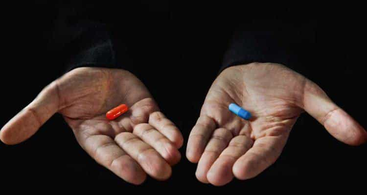

Are you alpha?
The Red Pill glossary of terms defines an alpha male as one who is socially dominant and displays high-value traits that are attractive to women. To expand on this definition, I would add that a true alpha male is one who has achieved total freedom not only in his choice with women, but in his ability to do what he wants, when he wants, where he wants, with whomever he wants.
As David Deida writes in The Way of the Superior Man:
The priority of the masculine is the mission which leads to freedom. You are always searching for freedom. Your basic motivation is to be released from constraint and experience the freedom on the other side.
The following is a 4-stage model I propose that every man must go through in order to break out of beta and become the badass alpha male he was meant to be.
Level 1 – Bluepill Spectator
The blue pill marks a path of conformity with society’s expectations. Men trapped at this level don’t even know that they don’t know. They are hypnotized and caught in the hamster wheel of going through the motions. They take what they are given. They are mere spectators in life, leaves in the wind, running on a script that was handed to them. They don’t ask questions. They do what they are told.
Level 2 – Choosing the Red Pill

Choosing the Red Pill means waking up and becoming aware of the games being played around you. At this level you are consuming the information to help you get better at these games. You are gaining knowledge on how to optimally function in a society that’s increasingly lacking a positive identity for men. But contrary to popular belief, knowledge is not power. Knowledge is only potential power. Without application, knowledge doesn’t amount to shit. Merely knowing something is not enough because you can know what to do but still not do what you know.
I’ve talked to a lot of guys over the past few weeks, and the majority of them are trapped at this level. They’ve read the books, they know the theories, and they understand what’s going on. Yet, they are caught up in the accumulation of knowledge and haven’t gotten down to application. They justify their inaction by placing blame on external factors, failing to realize that this mindset leaves them powerless.
Level 3 – Swallowing the Red Pill

Swallowing the Red Pill means taking what you know and actually applying it. You can read all the books you want on how to lift properly, but until you actually get your ass in the gym you’re not going to make any progress. You can accumulate all the information out there on how to get laid, but until you actually get in the field and approach you’re never going to get better with women.
At level 3, you understand that taking action provides access to the most information-rich stream of data. Only by taking action is the path revealed to you. Only by taking action can you gain an understanding of nuance and the areas that you need to improve on.
Knowledge can never lead to wisdom. The only thing that leads to wisdom is experience. And the only way to gain experience is by actually doing it.
Take advantage of the community, take advantage of all the resources you have available, but understand that action is the only thing that will move you forward.
Level 4 – Living the Red Pill

At level 4, you have results. You’ve been taking consistent action and are at the point where you actually identify with the particular belief system. It is who you are.
But “living it” is about taking consistent action. It’s not like you go to the gym for 12-weeks and then never have to go again. Living as an alpha male means that you’re always growing and striving for constant and never-ending improvement in every area of your life.
Call To Action
Knowing what to do is only 1% of the battle. Developing the discipline to do what you know you need to do, day in and day out, is a whole other animal. And then there’s the aspect of whether or not your actions are actually moving you towards your goals. Such is life. I’ve been working hard on my business and my body, but it has come at the expense of my dating life. All of us are on this journey and all of us have different areas that we need to improve on. What is the one area of your life that needs the most improvement and what actions can you commit to in order to improve it? Comment below. For me, it’s definitely women. Come September, I intend on traveling to either Vegas or South America and doing a minimum of 5 approaches every single day for (at least) 30 days.
As a man, your testosterone level is a major driving force in your overall health, energy, and assertiveness. Download the FREE 5-Step Blueprint that (almost) doubled my total T-level from 564 to 902 ng/dL in less than 4-months.
Read More: 11 Hard Truths I Learned From Taking The Red Pill